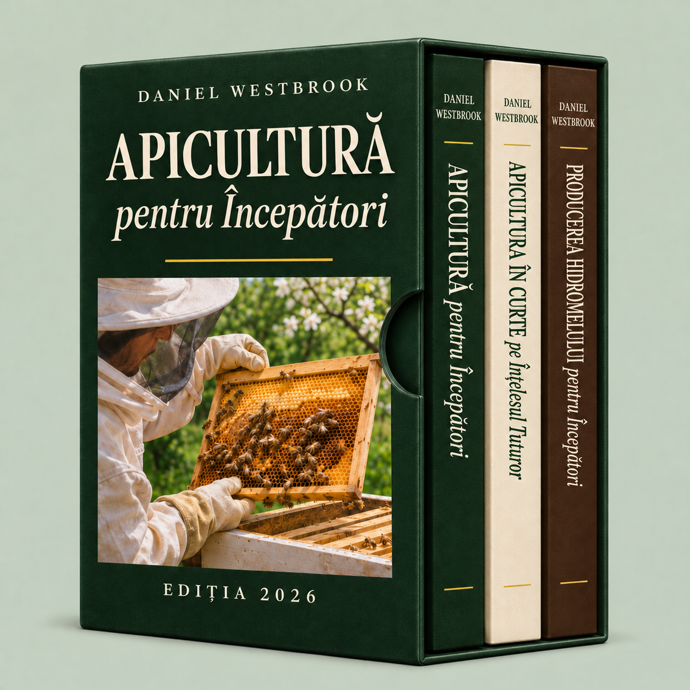

COLECȚIA LUI DANIEL WESTBROOK
De la prima colonie la propria miere.

Înțelege. Observă. Progresează.
ZONA TA DE MEMBRI
Aventura ta
Aventura ta
alături de albine
începe aici.
Ne bucurăm că ești aici. Descoperă lumea albinelor cu informații care te însoțesc de la primul pas.
BIBLIOTECA TA PERSONALĂ
Intră în zona de membri
Înțelege bazele. Îngrijește albine în curtea ta. Descoperă arta preparării hidromelului.
Citește toate cele trei cărți aici sau descarcă-le în format PDF.
- 3
- Cărți
- 180
- pagini de învățat
- Ritmul tău
- Pentru începători